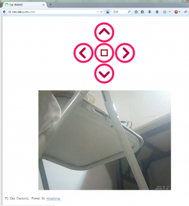

树莓派Wifi小车(三)
首先当然你需要有一个USB摄像头，现在市面上的大部门的UVC摄像头都能直接被Linux驱动，当然raspberry也是可以的，比起windows那乱七八糟的驱动程序是不是方便很多。
如果你不确定你的摄像头能不能直接被你的树莓派识别，你可以首先执行
lsusb 看看你的摄像头vid在不在UVC协议的官方支持列表。支持列表可查看：http://linux-uvc.berlios.de/
确定好了摄像头的驱动问题，下面就是安装网络摄像头监控软件了。
常用的有motion以及mjpg-streamer这两款软件
我之前一直用的是motion 这款软件，在openwrt和NAS的软件源里面都能很容易的安装，raspberry也不例外。我们先试试motion的效果！
一、motion安装以及使用
#首先更新系统软件源
sudo apt-get update
#升级系统软件包
sudo apt-get upgrade
#安装motion软件包
sudo apt-get install motion
#配置motion
#首先备份默认配置
cp /etc/motion/motion.conf /etc/motion/motion.conf.bak
#修改参数设置
#启用daemon
daemon on
#取消只绑定到本地，这样局域网其他机器才能访问到摄像头图像
webcam_localhost off
#监测到动作的时候不保存图片，否则会保存大量的图片占用SD卡
output_normal off
#启动motion后天服务，下面执行一下
motion
接下来使用firefox访问IP:8081 应该就能看到移动的图像了。
我们修改一下小车控制页面，将图像监视显示出来，效果如下：
是不是还不错! : )
二、mjpg-streamer安装以及使用
1、安装依赖软件包
sudo apt-get install libv4l-dev libjpeg8-dev imagemagick
2、下载mjpg-streamer软件源码包
wget http://downloads.sourceforge.net/project/mjpg-streamer/mjpg-streamer/Sourcecode/mjpg-streamer-r63.tar.gz
3、处理videodev.h丢失问题
编译过程会报错，错误的原因是Linux 2.4以上的内核里面都没有包含videodev.h这个文件了。在include/linux/下面有videodev2.h这个文件，但是在源文件中部分包含了videodev.h这个头文件。导致报错。解决的办法是：
sudo ln -s /usr/include/linux/videodev2.h /usr/include/linux/videodev.h
4、解压安装
tar xvf mjpg-streamer-r63.tar.gz cd mjpg-streamer-r63/ make USE_LIBV4L2=true clean all ./start.sh
打开 IP:8080看看效果吧！
本博客所有文章除特别声明外，均采用 CC BY-NC-SA 4.0 许可协议。转载请注明来源 all4fun blog！
 微信
微信 支付宝
支付宝
评论